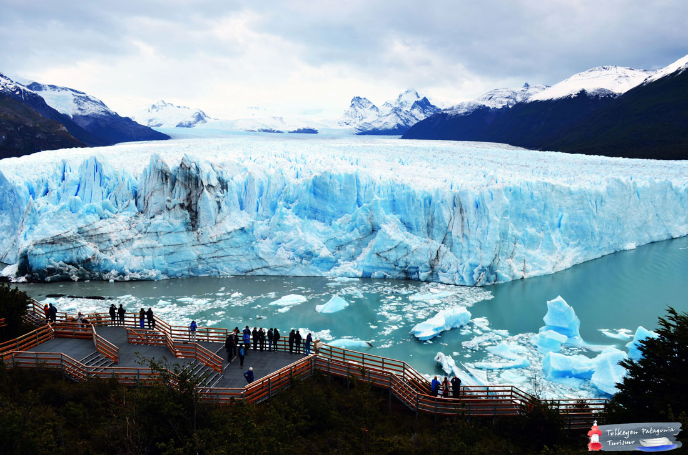
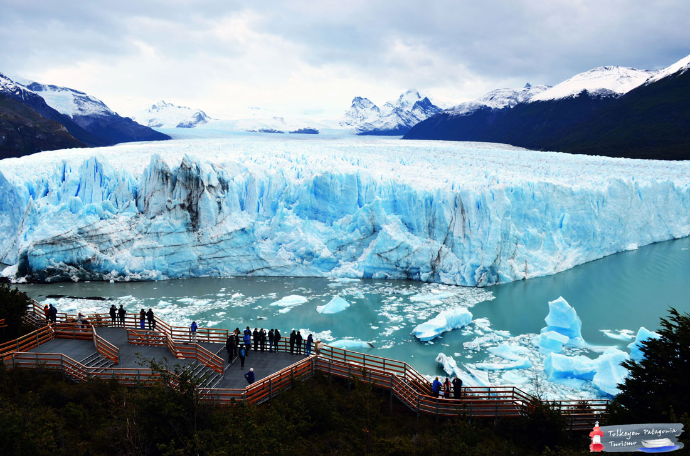
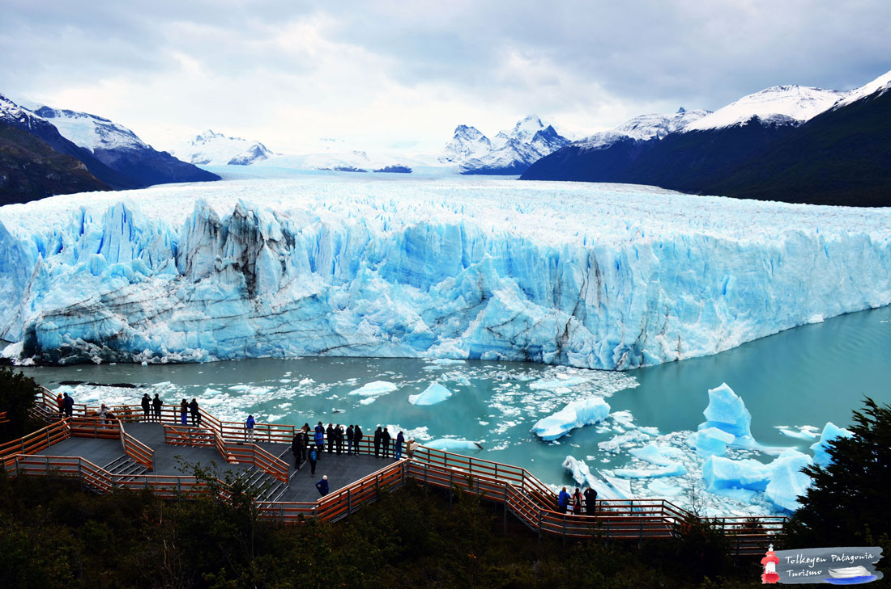
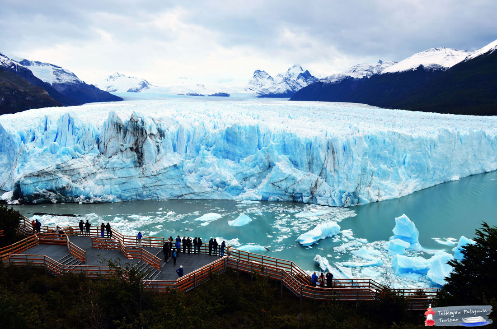
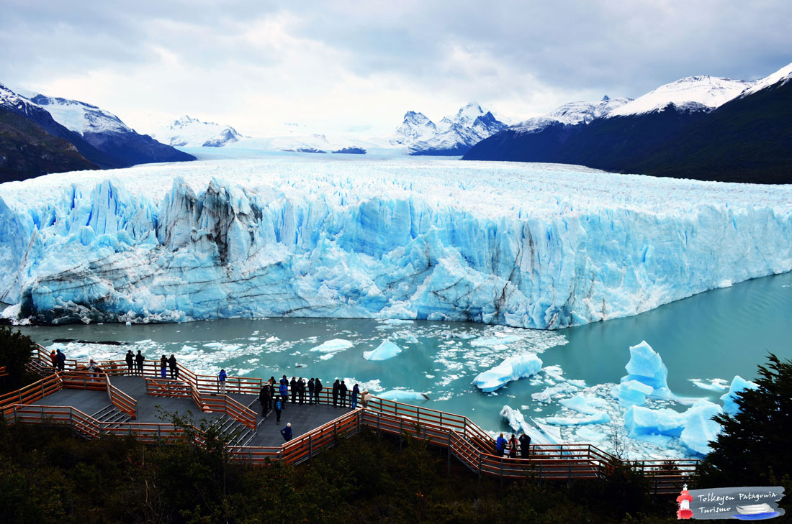

Lugares Turísticos de Argentina
Inicio
Lugares
Top 3 destinos
Cataratas del Iguazú
Glaciar Perito Moreno
Quebrada de Humahuaca
Otros destinos recomendados
Bariloche
Ushuaia
Mendoza
Galería

Video
 


